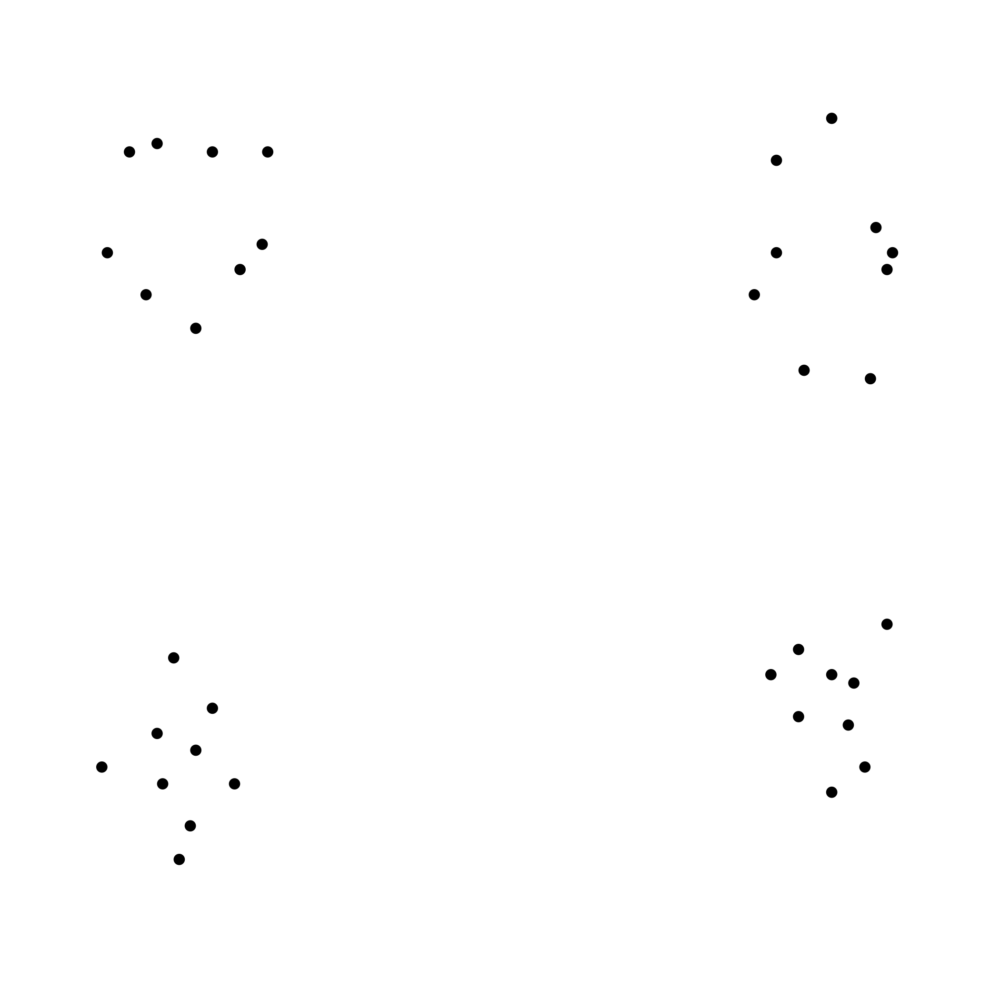

<!DOCTYPE html>
<html>
<head>
    <title>Dot Pattern Similarity Task</title>
    <script src="https://unpkg.com/jspsych@7.3.4"></script>
    <script src="https://unpkg.com/@jspsych/plugin-canvas-keyboard-response@1.1.3"></script>
    <script src="https://unpkg.com/@jspsych/plugin-html-slider-response@1.1.3"></script>
    <script src="https://unpkg.com/@jspsych/plugin-instructions@1.1.3"></script>
    <link href="https://unpkg.com/jspsych@7.3.4/css/jspsych.css" rel="stylesheet" type="text/css"></link>
    
    <style>
        /* CSS class for reducing line spacing */
        .compact-label {
            line-height: 0.95; /* Adjust this value as needed to reduce line spacing */
        }
    </style>
    
</head>
<body></body>

<script>
    
    const CANVAS_WIDTH = 600; // Global variable for canvas width
    const CANVAS_HEIGHT = 250; // Global variable for canvas height
    
    document.addEventListener('DOMContentLoaded', function() {
        const jsPsych = initJsPsych({
            on_trial_finish: function() {
                var trial_data = jsPsych.data.get().last(1);
                console.log(trial_data.csv());
            },
            on_finish: function() {
                jsPsych.data.get().localSave('csv', 'similarity_ratings.csv');
            }
        });
        
        function drawPattern(context, pattern, xOffset, canvasWidth, canvasHeight) {
            const dotSize = 1.0; // Size of the dots
            const patternScale = 5.0; // Increased scale for larger patterns
            
            // Adjust the scale and centering based on the new requirements
            const scale = Math.min(canvasWidth / 2, canvasHeight) / 45; // Adjust scale for larger patterns
            const centerX = xOffset + (canvasWidth / 4) + 60; // Shift patterns to the right for centering
            const centerY = canvasHeight / 2;
            
            pattern.forEach(dot => {
                context.beginPath();
                const x = (dot.x * scale) + centerX;
                const y = centerY - (dot.y * scale);
                context.arc(x, y, dotSize * scale, 0, 2 * Math.PI);
                context.fill();
            });
        }
        
        // Welcome page
        var welcome = {
            type: jsPsychInstructions,
            pages: [
            'Welcome to the Dot Pattern Similarity Task. <br><br> Press "Next" to continue.'
            ],
            show_clickable_nav: true
        };
        
        // Instructions page
        var instructions = {
            type: jsPsychInstructions,
            pages: [
            'In this task, you will be presented with pairs of dot patterns. <br><br>' +
            'Your job is to rate the similarity of each pair on a scale from "Not Similar" to "Very Similar". <br><br>',
            'Examples of Dot Patterns that are highly similar: ' +
            '<br>' + 
            '</img>', 
            'Examples of Dot Patterns that are not similar: ' +
            '<br>' + 
            '</img>'

           ], 
           show_clickable_nav: true
        };
        
        // Define the rest of the task here, including trials generation...
        // For brevity, the loadAndStartExperiment function is not repeated here
        // but should be included as defined previously
        
        // Preload images or any assets if needed
        
        
        function loadAndStartExperiment(callback) {
            var xhr = new XMLHttpRequest();
            xhr.open('GET', 'mc_patterns.json', true);
            xhr.onload = function() {
                if (xhr.status === 200) {
                    var json = JSON.parse(xhr.responseText);
                    var trials = createTrialsFromJson(json);
                    callback(trials); // Callback to continue with the trials
                } else {
                    console.error('There was a problem with the request.');
                }
            };
            xhr.send();
        }
        
        function createTrialsFromJson(json) {
            const trials = [];
            // Your logic to create trials from JSON data
            return trials; // Make sure this returns the constructed trials array
        }
        
        
        function loadAndStartExperiment(callback) {
            var xhr = new XMLHttpRequest();
            xhr.open('GET', 'mc_patterns.json', true);
            xhr.onload = function() {
                if (xhr.status === 200) {
                    var json = JSON.parse(xhr.responseText);
                    var trials = createTrialsFromJson(json);
                    if(callback) callback(trials); // Ensure callback is called with the trials
                } else {
                    console.error('There was a problem with the request.');
                }
            };
            xhr.send();
        }
        
        
        function createTrialsFromJson(json) {
            
            const trials = [];
            for (let i = 0; i < json.length; i += 3) {
                const patternSets = [
                [json[i], json[i + 1]],
                [json[i], json[i + 2]],
                [json[i + 1], json[i + 2]]
                ];
                
                patternSets.forEach(patternSet => {
                    const patterns = patternSet.map(trialData => {
                        return Array.from({length: 9}, (_, idx) => ({
                            x: trialData[`x${idx + 1}`],
                            y: trialData[`y${idx + 1}`]
                        }));
                    });
                    
                    trials.push({
                        type: jsPsychHtmlSliderResponse, // Corrected plugin type
                        stimulus: function() {
                            var canvasHtml = `<canvas id="dot-pattern-canvas" width="${CANVAS_WIDTH}" height="${CANVAS_HEIGHT}"></canvas>`;
                            return canvasHtml;
                        },
                        //labels: ['Not\n Similar','Slightly Similar','Fairly Similar' ,'Very Similar'],
                        labels: [
                        '<div class="compact-label">Not<br>Similar</div>', 
                        '<div class="compact-label">Slightly<br>Similar</div>', 
                        '<div class="compact-label">Fairly<br>Similar</div>', 
                        '<div class="compact-label">Very<br>Similar</div>'
                        ],
                        slider_width: CANVAS_WIDTH * 0.75,
                        slider_start: 50,
                        on_load: function() {
                            const canvas = document.getElementById('dot-pattern-canvas');
                            const context = canvas.getContext('2d');
                            context.clearRect(0, 0, canvas.width, canvas.height);
                            
                            const patternWidth = canvas.width / 2; // For two patterns
                            patterns.forEach((pattern, index) => {
                                const xOffset = index * patternWidth;
                                drawPattern(context, pattern, xOffset, patternWidth, canvas.height);
                            });
                        },
                        prompt: '<p>Rate the similarity of the patterns.</p>',
                        response_ends_trial: true,
                        data: {
                            pattern_1: JSON.stringify(patterns[0]),
                            pattern_2: JSON.stringify(patterns[1])
                        }
                    });
                });
            }
            return trials
        } 
        
        
        var fullTimeline = [welcome, instructions].concat(loadAndStartExperiment());
        
        
        loadAndStartExperiment(function(trials) {
            var fullTimeline = [welcome, instructions].concat(trials);
            jsPsych.run(fullTimeline);
        });
        
    });
</script>
</html>
